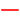
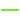

Water Column Sonar Data
|  | ||
|  | ||
Filter Data
Reset
Abstract
Water column sonar data are collected by active acoustic (or sonar) technology and contain acoustic scattering information from the near- surface to the seafloor. Scientists use these data to assess physical and biological characteristics of the ocean, including the spatial distribution of plankton, fish, methane seeps and underwater oil plumes.
Data Providers: NOAA National Marine Fisheries Service (NMFS), NOAA Office of Exploration and Research (OER), University-National Oceanographic Laboratory System (UNOLS), and international or non-NOAA/non-academic groups (Other).
Data Collection: A variety of sonars are used by the data providers with Kongsberg EM 122 (12 kHz), Kongsberg EM 302 (30 kHz), Simrad EK60 (18-710 kHz, split beam), and Simrad ME 70 (70-120 kHz, can be split beam) echosounders being most common. The configuration of each cruise's sonar system (e.g., angle, type and number of beams) can be found in the file metadata.
Data Citation: Proper citation for these data can be found in the ReadMe file provided during download. Citations are unique to the cruise and sonar type.
Online Resources
NGDC Water Column Sonar Data Archive
Metadata for this archive
NGDC Bathymetry, Multibeam, and NOS Hydrographic Survey Archives
Water column sonar data are collected by active acoustic (or sonar) technology and contain acoustic scattering information from the near- surface to the seafloor. Scientists use these data to assess physical and biological characteristics of the ocean, including the spatial distribution of plankton, fish, methane seeps and underwater oil plumes.
Data Providers: NOAA National Marine Fisheries Service (NMFS), NOAA Office of Exploration and Research (OER), University-National Oceanographic Laboratory System (UNOLS), and international or non-NOAA/non-academic groups (Other).
Data Collection: A variety of sonars are used by the data providers with Kongsberg EM 122 (12 kHz), Kongsberg EM 302 (30 kHz), Simrad EK60 (18-710 kHz, split beam), and Simrad ME 70 (70-120 kHz, can be split beam) echosounders being most common. The configuration of each cruise's sonar system (e.g., angle, type and number of beams) can be found in the file metadata.
Data Citation: Proper citation for these data can be found in the ReadMe file provided during download. Citations are unique to the cruise and sonar type.
Online Resources
NGDC Water Column Sonar Data Archive
Metadata for this archive
NGDC Bathymetry, Multibeam, and NOS Hydrographic Survey Archives